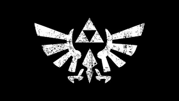

The Legend of Zelda
The Legend of Zelda is a high-fantasy action-adventure video game series created by Japanese game designers Shigeru Miyamoto and Takashi Tezuka. It is primarily developed and published by Nintendo, although some portable installments have been outsourced to Capcom, Vanpool, and Grezzo. The series' gameplay incorporates elements of action, adventure, and puzzle-solving games. The Legend of Zelda is one of Nintendo's most prominent franchises.
The series centers on Link, the playable character and chief protagonist. Link is often given the task of rescuing Princess Zelda and the kingdom of Hyrule from Ganon, who is the principal antagonist of the series; however, other settings and antagonists have appeared in several titles. The games' plots commonly involve a relic known as the Triforce, a set of three omnipotent golden triangles. The protagonist in each game is usually not the same incarnation of Link, but a few exceptions exist.
Since the original The Legend of Zelda was released in 1986, the series has expanded to include 18 entries on all of Nintendo's major game consoles, as well as a number of spin-offs. An American animated TV series based on the games aired in 1989 and individual manga adaptations commissioned by Nintendo have been produced in Japan since 1997. As of 2011, the series has sold over 62 million copies.